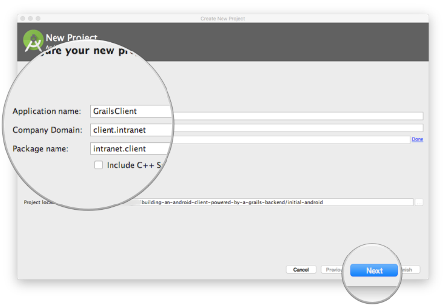
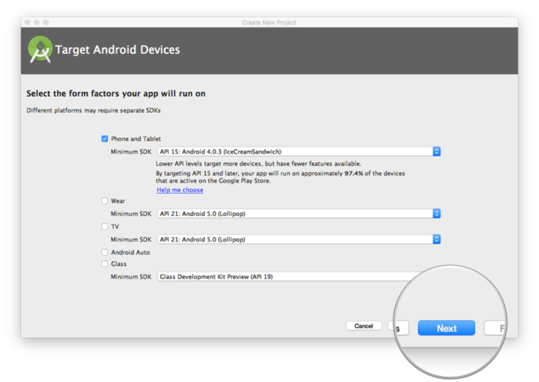
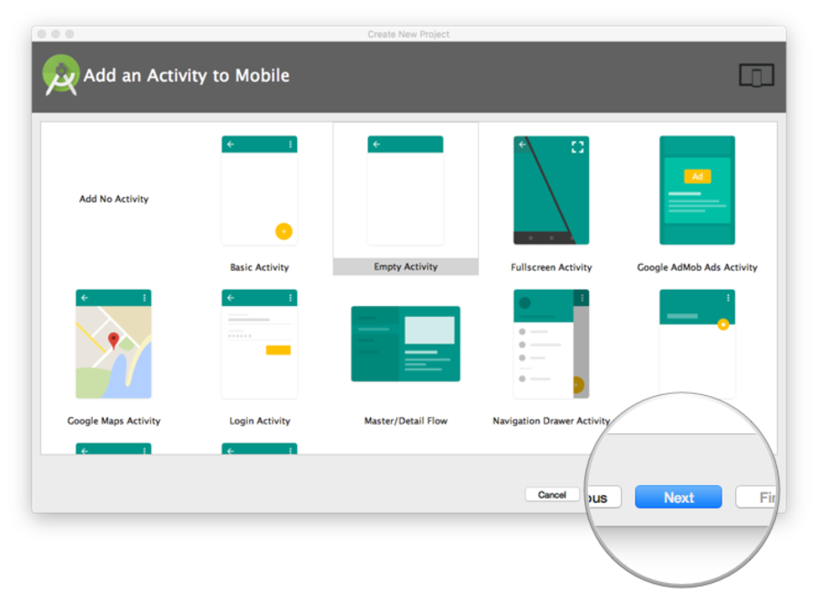
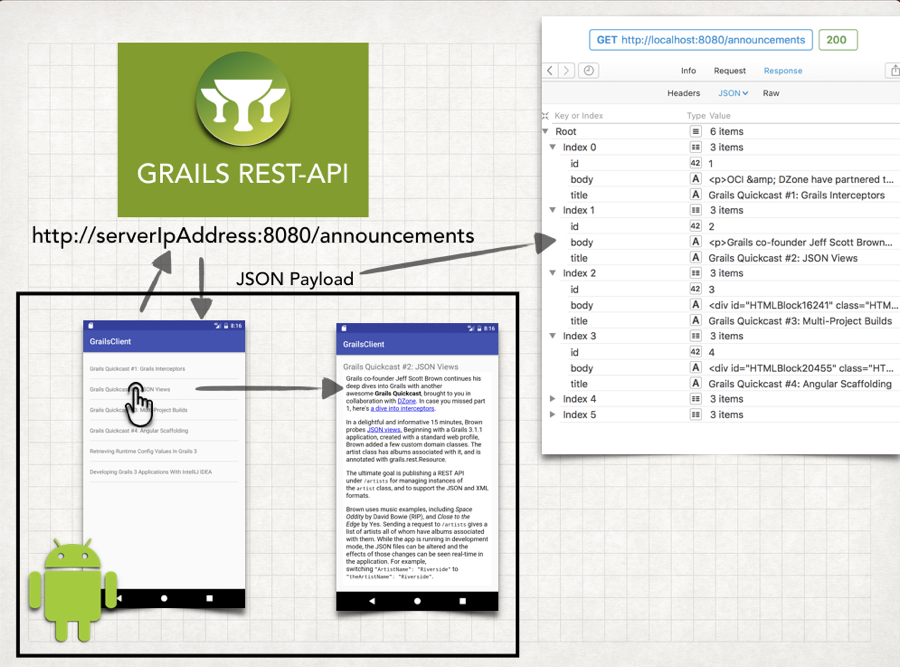
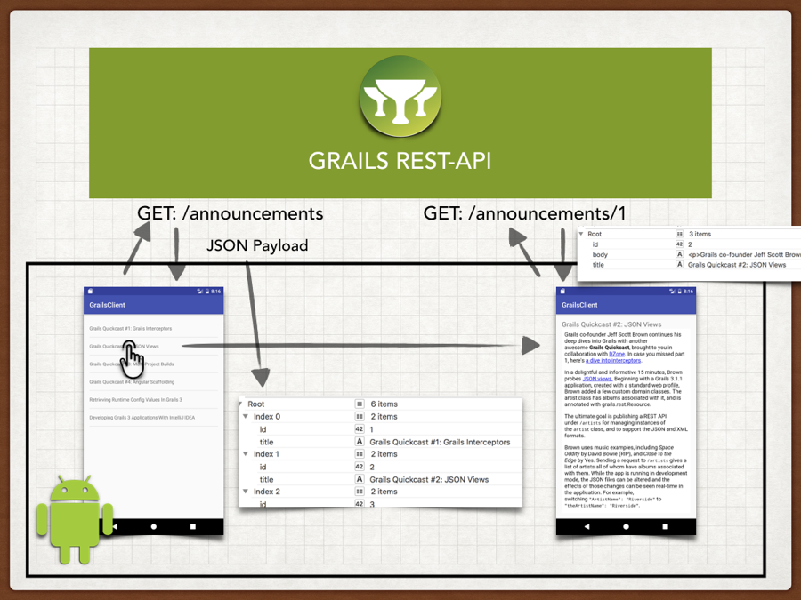

$ grails create-app intranet.backend.grails-app --profile rest-api $ cd grails-app
Building an Android client powered by a Grails backend
Authors: Sergio del Amo
Version: 4
Table of Contents
1 Grails Training
2 Getting Started
In this guide you are going to build a Grails application which will serve as a company intranet backend. It exposes a JSON API of company announcements.
Additionally, you are going to build an Android App, the intranet client, which consumes the JSON API offered by the backend.
The guide explores the support of diffent API versions.
2.1 What you will need
2.2 How to complete the guide
To complete this guide, you will need to checkout the source from Github and work through the steps presented by the guide.
To get started do the following:
-
Download and unzip the source or if you already have Git:
git clone https://github.com/grails-guides/building-an-android-client-powered-by-a-grails-backend.git
To follow the Grails part:
-
cdintograils-guides/building-an-android-client-powered-by-a-grails-backend/initial
Alternatively, if you already have Grails installed then you can create a new application using the following command in a Terminal window:
When the create-app command completes, Grails will create a grails-app directory with an application configured to create a REST application (due to the use of the parameter profile=rest-api ) and configured to use the hibernate feature with an H2 database.
You can go right to the completed Grails example if you cd into grails-guides/building-an-android-client-powered-by-a-grails-backend/complete
|
To follow the Android part:
-
cdintograils-guides/building-an-android-client-powered-by-a-grails-backend/initial-android -
Head on over to the next section
Alternatively, you can create an android app using the New Project Wizard of Android Studio as illustrated in the next screenshots.



You can go right to the completed version 1 of the Android example if you cd into grails-guides/building-an-android-client-powered-by-a-grails-backend/complete-android-v1
|
You can go right to the completed version 2 of the Android example if you cd into grails-guides/building-an-android-client-powered-by-a-grails-backend/complete-android-v2
|
3 Overview
The next image illustrates the behavior of Android app version 1. The Android app is composed by two Activities.
-
When the Android application initial screen loads, it requests an announcements list.
-
The Grails app sends a JSON payload which includes a list of announcements. For each announcement, a unique identifier, a title and a HTML body are included.
-
The android app renders the JSON Payload in a ListView.
-
The user taps an announcement’s title and the app transition to a detail screen. The initial screen sends the detail screen the announcement identifier, title and HTML body. The latter will be rendered in a WebView.

4 Writing the Grails Application
Now you are ready to start writing the Grails application.
4.1 Create a Domain Class - Persistent Entities
We need to create persistent entities to store company announcements. Grails handles persistence with the use of Grails Domain Classes:
Grails simplifies the creation of domain classes with the create-domain-class command.
./grailsw create-domain-class Announcement
| Resolving Dependencies. Please wait...
CONFIGURE SUCCESSFUL
Total time: 4.53 secs
| Created grails-app/grails/company/intranet/Announcement.groovy
| Created src/test/groovy/grails/company/intranet/AnnouncementSpec.groovyJust to keep it simple, we assume the company announcements just contain a title and a HTML body. We are going to modify the domain class generated in the previous step to store that information.
grails-app/domain/intranet/backend/Announcement.groovy
link:../snippets/grails-app/domain/intranet/backend/Announcement.groovy[role=include]| 1 | it enables us to store strings with more than 255 characters in the body. |
4.2 Domain Class Unit Testing
Grails makes testing easier from low-level unit testing to high level functional tests.
We are going to test the constraints we defined in the Announcement domain Class in constraints property. In particular
nullability and length of both title and body properties.
src/test/groovy/intranet/backend/AnnouncementSpec.groovy
link:../snippets/src/test/groovy/intranet/backend/AnnouncementSpec.groovy[role=include]We can run the every test, including the one we just created, with the command test_app
./grailsw test-app
| Resolving Dependencies. Please wait...
CONFIGURE SUCCESSFUL
Total time: 2.534 secs
:complete:compileJava UP-TO-DATE
:complete:compileGroovy
:complete:buildProperties
:complete:processResources
:complete:classes
:complete:compileTestJava UP-TO-DATE
:complete:compileTestGroovy
:complete:processTestResources UP-TO-DATE
:complete:testClasses
:complete:test
:complete:compileIntegrationTestJava UP-TO-DATE
:complete:compileIntegrationTestGroovy UP-TO-DATE
:complete:processIntegrationTestResources UP-TO-DATE
:complete:integrationTestClasses UP-TO-DATE
:complete:integrationTest UP-TO-DATE
:complete:mergeTestReports
BUILD SUCCESSFUL
| Tests PASSED4.3 Versioning
It is important to think about API versioning from the beginning, especially when you create an API consumed by mobile phone applications. Users will run different versions of the app, and you will need to version your API to create advanced functionality but keep supporting legacy versions.
Grails allows multiple ways to Version REST Resources.
-
Using the URI
-
Using the Accept-Version Header
-
Using Hypermedia/Mime Types
In this guide we are going to version the API using the Accept-Version HTTP header.
Devices running version 1.0 will invoke the announcements enpoint passing the 1.0 in the Accept Version Header.
$ curl -i -H "Accept-Version: 1.0" -X GET http://localhost:8080/announcementsDevices running version 2.0 will invoke the announcements enpoint passing the 2.0 in the Accept Version Header.
$ curl -i -H "Accept-Version: 2.0" -X GET http://localhost:8080/announcements4.4 Create a Controller
We create a Controller for the Domain class we previously created. Our Controller extends RestfulController. This
will provide us RESTful functionality to list, create, update and delete Announcement resources using
different HTTP Methods.
grails-app/controllers/intranet/backend/v1/AnnouncementController.groovy
link:../snippets/grails-app/controllers/intranet/backend/v1/AnnouncementController.groovy[role=include]| 1 | this controller will handle v1 of our api |
| 2 | we want to respond only JSON Payloads |
Url Mapping
We want our endpoint to listen in /announcements instead of /announcement. Moreover, we want the previous controller for
which we declared a namespace of v1 to handle the requests with the Accept-Version Http Header set to 1.0.
Grails enables powerful URL mapping configuration to do that. Add the next line to the mappings closure:
/grails-app/controllers/intranet/backend/UrlMappings.groovy
link:../snippets/grails-app/controllers/intranet/backend/UrlMappings.groovy[role=include]4.5 Loading test data
We are going to populate the database with several announcements when the application startups.
In order to do that, we edit grails-app/init/grails/company/intranet/BootStrap.groovy.
package grails.company.intranet
class BootStrap {
def init = { servletContext ->
announcements().each { it.save() }
}
def destroy = {
}
static List<Announcement> announcements() {
[
new Announcement(title: 'Grails Quickcast #1: Grails Interceptors'),
new Announcement(title: 'Grails Quickcast #2: JSON Views')
]
}
}
Announcements in the previous code snippet don’t contain body content
to keep the code sample small. Checkout grails-app/init/intranet/backend/BootStrap.groovy to see the complete code.
|
4.6 Functional tests
Functional Tests involve making HTTP requests against the running application and verifying the resultant behavior.
We use the Rest Client Builder Grails Plugin whose dependency is added when we create an app with the rest-api profile.
{sourceDir}
/src/integration-test/groovy/intranet/backend/AnnouncementControllerSpec.groovy
link:../snippets/src/integration-test/groovy/intranet/backend/AnnouncementControllerSpec.groovy[role=include]| 1 | serverPort is automatically injected. It contains the random port where the grails application runs during the functional test |
| 2 | Pass the api version as an Http header |
| 3 | Verify the response code is 200; OK |
| 4 | Body is present in the JSON paylod |
Grails command test-app runs unit, integration and functional tests.
4.7 Running the Application
5 Writing the Android Application
5.1 Fetching the Announcements
Next image illustrates the classes involved in the fetching and rendering of the announcements exposed by the Grails application.

5.2 Networking code
We have a class where serveral constants are initialized:
/app/src/main/java/intranet/client/network/Constants.java
link:{sourcedir}/../complete-android-v1/app/src/main/java/intranet/client/network/Constants.java[role=include]| 1 | Grails App server url. |
| 2 | The path we configured in the Grails app in UrlMappings.groovy |
| 3 | The version of the API |
| You may need to change the ip address to match your local machine. |
Model
The announcements sent by the server are gonna be rendered into this POJO:
/app/src/main/java/intranet/client/network/model/Announcement.java
link:{sourcedir}/../complete-android-v1/app/src/main/java/intranet/client/network/model/Announcement.java[role=include]Networking Dependencies
You will need to add INTERNET permission to app/src/main/AndroidManifest.xml
/app/src/main/AndroidManifest.xml
link:{sourcedir}/../complete-android-v1/app/src/main/AndroidManifest.xml[role=include]OkHttp
We are going to use one of the most popular http clients for Android, OkHttp
To add OkHttp as a dependency, edit the file app/build.gradle and add, in the dependencies block, the next line:
/app/build.gradle
link:{sourcedir}/../complete-android-v1/app/build.gradle[role=include]Gson
Gson is a Java library that can be used to convert Java Objects into their JSON representation. It can also be used to convert a JSON string to an equivalent Java object.
To add Gson as a dependency, edit the file app/build.gradle and add, in the dependencies block, the next line:
/app/build.gradle
link:{sourcedir}/../complete-android-v1/app/build.gradle[role=include]We are going to encapsulate the instantiation of OkHttp Request in a class to ensure the Accept-Version Http header is always set with the value defined in the Constants.java class
/app/src/main/java/intranet/client/network/NetworkTask.java
link:{sourcedir}/../complete-android-v1/app/src/main/java/intranet/client/network/NetworkTask.java[role=include]The next class fetches and returns a list of Announcements.
/app/src/main/java/intranet/client/network/AnnouncementsFetcher.java
link:{sourcedir}/../complete-android-v1/app/src/main/java/intranet/client/network/AnnouncementsFetcher.java[role=include]In order to avoid running networking code in the UI thread we are going to encapsulate the networking code in an AsyncTask
/app/src/main/java/intranet/client/android/asynctasks/RetrieveAnnouncementsTask.java
link:{sourcedir}/../complete-android-v1//app/src/main/java/intranet/client/android/asynctasks/RetrieveAnnouncementsTask.java[role=include]Once we get a list of announcements, we will communicate the response to classes implementing the delegate
/app/src/main/java/intranet/client/android/delegates/RetrieveAnnouncementsDelegate.java
link:{sourcedir}/../complete-android-v1//app/src/main/java/intranet/client/android/delegates/RetrieveAnnouncementsDelegate.java[role=include]The class which implements the delegate receiving the announcements is the initial Activity
/app/src/main/java/intranet/client/android/activities/MainActivity.java
link:{sourcedir}/../complete-android-v1/app/src/main/java/intranet/client/android/activities/MainActivity.java[role=include]| 1 | Triggers the async tasks to fetch the announcements asynchronously. |
| 2 | Refreshes the UI once we get a list of announcements |
MainActivity uses a ListView defined in:
/app/src/main/res/layout/activity_main.xml
link:{sourcedir}/../complete-android-v1/app/src/main/res/layout/activity_main.xml[role=include]The next classes and layout files render the different announcements in a ListView and handle the user tap.
/app/src/main/java/intranet/client/android/adapters/AnnouncementAdapter.java
link:{sourcedir}/../complete-android-v1//app/src/main/java/intranet/client/android/adapters/AnnouncementAdapter.java[role=include]/app/src/main/java/intranet/client/android/delegates/AnnouncementAdapterDelegate.java
link:{sourcedir}/../complete-android-v1//app/src/main/java/intranet/client/android/delegates/AnnouncementAdapterDelegate.java[role=include]/app/src/main/res/layout/item_announcement.xml
link:{sourcedir}/../complete-android-v1/app/src/main/res/layout/item_announcement.xml[role=include]5.3 Detail Activity
When the user taps an announcement, the announcement is transmited using Android Intent Extras

You will need to add a second activity two the manifest.
/app/src/main/AndroidManifest.xml
link:{sourcedir}/../complete-android-v1/app/src/main/AndroidManifest.xml[role=include]/app/src/main/java/intranet/client/android/activities/AnnouncementActivity.java
link:{sourcedir}/../complete-android-v1//app/src/main/java/intranet/client/android/activities/AnnouncementActivity.java[role=include]/app/src/main/res/layout/activity_announcement.xml
link:{sourcedir}/../complete-android-v1/app/src/main/res/layout/activity_announcement.xml[role=include]6 API version 2.0
The problem with the first version of the API is that we include every announcement
body in the payload used to displayed the list. An announcement’s body can be a large block of HTML.
A user will probably just wants to check a couple of announcements. It will save bandwidth and
make the app faster if we don’t send the announcement body in the initial request. Instead, we will ask
the API for a complete announcement (including body) once the user taps the announcement.

6.1 Grails V2 Changes
We are going to use create Controller to handle the version 2 of the API. We are going to use a Criteria query with a projection to fetch only the id and title of the announcements.
grails-app/controllers/intranet/backend/v2/AnnouncementController.groovy
link:../snippets/grails-app/controllers/intranet/backend/v2/AnnouncementController.groovy[role=include]We encapsulate the querying in a service
grails-app/services/intranet/backend/AnnouncementService.groovy
link:../snippets/grails-app/services/intranet/backend/AnnouncementService.groovy[role=include]and we test it:
/src/test/groovy/intranet/backend/AnnouncementServiceSpec.groovy
link:../snippets/src/test/groovy/intranet/backend/AnnouncementServiceSpec.groovy[role=include]Url Mapping
We need to map the version 2.0 of the Accept-Header to the namespace v2
/grails-app/controllers/intranet/backend/UrlMappings.groovy
link:../snippets/grails-app/controllers/intranet/backend/UrlMappings.groovy[role=include]6.2 Api 2.0 Functional tests
We want to test the Api version 2.0 does not include the body property when receiving a GET request to the announcements endpoint. The next functional test verifies that behaviour.
{sourceDir}
/src/integration-test/groovy/intranet/backend/AnnouncementControllerSpec.groovy
link:../snippets/src/integration-test/groovy/intranet/backend/AnnouncementControllerSpec.groovy[role=include]| 1 | Body is not present in the JSON paylod |
Grails command test-app runs unit, integration and functional tests.
6.3 Android V2 Changes
First we need to change the api version defined in Constants.java
/app/src/main/java/intranet/client/network/Constants.java
link:{sourcedir}/../complete-android-v2/app/src/main/java/intranet/client/network/Constants.java[role=include]The detail activity uses an asyncTask to fetch a complete announcement.
/app/src/main/java/intranet/client/android/asynctasks/RetrieveAnnouncementTask.java
link:{sourcedir}/../complete-android-v2/app/src/main/java/intranet/client/android/asynctasks/RetrieveAnnouncementTask.java[role=include]Once we get an announcement we will communicate the response to classes implementing the delegate
/app/src/main/java/intranet/client/android/delegates/RetrieveAnnouncementDelegate.java
link:{sourcedir}/../complete-android-v2/app/src/main/java/intranet/client/android/delegates/RetrieveAnnouncementDelegate.java[role=include]The Announcement Activity implements the delegate and renders the announcement.
/app/src/main/java/intranet/client/android/activities/AnnouncementActivity.java
link:{sourcedir}/../complete-android-v2/app/src/main/java/intranet/client/android/activities/AnnouncementActivity.java[role=include]7 Conclusion
Thanks to Grails ease of API versioning we can now support two Android applications running different versions.